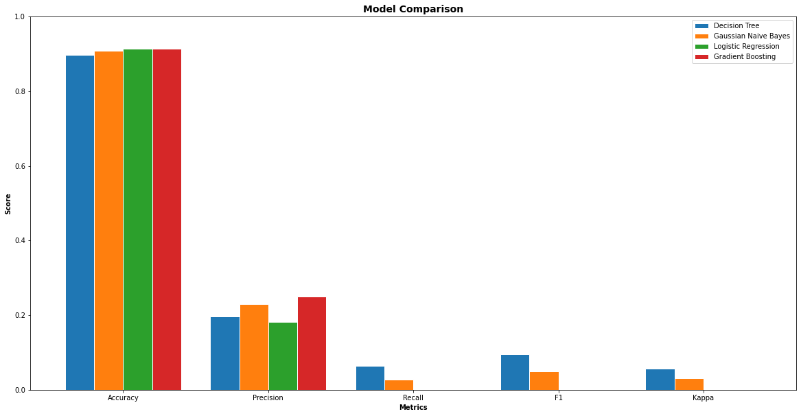
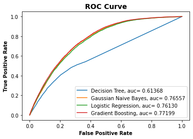

Machine Learning Algorithms Comparison
Contents
Machine Learning Algorithms Comparison¶
import pandas as pd
import numpy as np
#preprocessing and feature selection libraries
from sklearn.preprocessing import StandardScaler, LabelEncoder
from sklearn.preprocessing import MinMaxScaler
from sklearn.feature_selection import SelectFromModel, SelectKBest, RFE, chi2
from sklearn.ensemble import RandomForestClassifier
# ML and plot libraries
from sklearn import metrics
from sklearn.model_selection import train_test_split
from sklearn.tree import DecisionTreeClassifier
from sklearn.naive_bayes import GaussianNB
from sklearn.linear_model import LogisticRegression
from sklearn.ensemble import GradientBoostingClassifier
import matplotlib.pyplot as plt
import warnings
warnings.filterwarnings("ignore")
df = pd.read_csv('data/heart_2020_cleaned.csv')
df.head()
| HeartDisease | BMI | Smoking | AlcoholDrinking | Stroke | PhysicalHealth | MentalHealth | DiffWalking | Sex | AgeCategory | Race | Diabetic | PhysicalActivity | GenHealth | SleepTime | Asthma | KidneyDisease | SkinCancer | |
|---|---|---|---|---|---|---|---|---|---|---|---|---|---|---|---|---|---|---|
| 0 | No | 16.60 | Yes | No | No | 3.0 | 30.0 | No | Female | 55-59 | White | Yes | Yes | Very good | 5.0 | Yes | No | Yes |
| 1 | No | 20.34 | No | No | Yes | 0.0 | 0.0 | No | Female | 80 or older | White | No | Yes | Very good | 7.0 | No | No | No |
| 2 | No | 26.58 | Yes | No | No | 20.0 | 30.0 | No | Male | 65-69 | White | Yes | Yes | Fair | 8.0 | Yes | No | No |
| 3 | No | 24.21 | No | No | No | 0.0 | 0.0 | No | Female | 75-79 | White | No | No | Good | 6.0 | No | No | Yes |
| 4 | No | 23.71 | No | No | No | 28.0 | 0.0 | Yes | Female | 40-44 | White | No | Yes | Very good | 8.0 | No | No | No |
Data Preprocessing¶
# standarize numerical columns
num_cols = ['BMI', 'PhysicalHealth', 'MentalHealth', 'SleepTime']
StandardScaler = StandardScaler()
df[num_cols] = StandardScaler.fit_transform(df[num_cols])
# Encode labels in Yes/No columns
label_encoder = LabelEncoder()
cat_cols = ['HeartDisease', 'Smoking', 'AlcoholDrinking', 'Stroke',
'DiffWalking', 'Sex','Diabetic', 'PhysicalActivity',
'Asthma', 'KidneyDisease', 'SkinCancer',
'AgeCategory', 'Race', 'GenHealth']
for i in cat_cols:
df[i] = label_encoder.fit_transform(df[i])
df.head()
| HeartDisease | BMI | Smoking | AlcoholDrinking | Stroke | PhysicalHealth | MentalHealth | DiffWalking | Sex | AgeCategory | Race | Diabetic | PhysicalActivity | GenHealth | SleepTime | Asthma | KidneyDisease | SkinCancer | |
|---|---|---|---|---|---|---|---|---|---|---|---|---|---|---|---|---|---|---|
| 0 | 0 | -1.844750 | 1 | 0 | 0 | -0.046751 | 3.281069 | 0 | 0 | 7 | 5 | 2 | 1 | 4 | -1.460354 | 1 | 0 | 1 |
| 1 | 0 | -1.256338 | 0 | 0 | 1 | -0.424070 | -0.490039 | 0 | 0 | 12 | 5 | 0 | 1 | 4 | -0.067601 | 0 | 0 | 0 |
| 2 | 0 | -0.274603 | 1 | 0 | 0 | 2.091388 | 3.281069 | 0 | 1 | 9 | 5 | 2 | 1 | 1 | 0.628776 | 1 | 0 | 0 |
| 3 | 0 | -0.647473 | 0 | 0 | 0 | -0.424070 | -0.490039 | 0 | 0 | 11 | 5 | 0 | 0 | 2 | -0.763977 | 0 | 0 | 1 |
| 4 | 0 | -0.726138 | 0 | 0 | 0 | 3.097572 | -0.490039 | 1 | 0 | 4 | 5 | 0 | 1 | 4 | 0.628776 | 0 | 0 | 0 |
# split data into training and testing set
# 30% testing, 70% training
features = df.drop(columns=['HeartDisease'], axis=1)
label = df['HeartDisease']
X_train, X_test, y_train, y_test = train_test_split(features, label,
shuffle=True, test_size=.3)
# check shapes of training and testing sets
print('Shape of training feature:', X_train.shape)
print('Shape of testing feature:', X_test.shape)
print('Shape of training label:', y_train.shape)
print('Shape of training label:', y_test.shape)
Shape of training feature: (223856, 17)
Shape of testing feature: (95939, 17)
Shape of training label: (223856,)
Shape of training label: (95939,)
Features Selection¶
feature_name = list(X_train.columns)
max_feats = len(feature_name) # maximum number of features that could be chosen
max_feats
17
X_norm = MinMaxScaler().fit_transform(X_train)
Embedded Method¶
# Random Forest to select features based on their importance
embeded_rf_selector = SelectFromModel(RandomForestClassifier(n_estimators=100),
max_features=max_feats)
embeded_rf_selector.fit(X_train, y_train)
embeded_rf_support = embeded_rf_selector.get_support()
embeded_rf_feature = X_train.loc[:, embeded_rf_support].columns.tolist()
embeded_rf_feature
['BMI', 'PhysicalHealth', 'MentalHealth', 'AgeCategory', 'SleepTime']
embeded_lr_selector = SelectFromModel(LogisticRegression(penalty="l2"),
max_features=max_feats)
embeded_lr_selector.fit(X_norm, y_train)
embeded_lr_support = embeded_lr_selector.get_support()
embeded_lr_feature = X_train.loc[:, embeded_lr_support].columns.tolist()
embeded_lr_feature
['BMI', 'Stroke', 'Sex', 'AgeCategory', 'Diabetic', 'SleepTime']
Filter Method¶
# Chi Squared for Feature Selection
chi_selector = SelectKBest(chi2, k=max_feats)
chi_selector.fit(X_norm, y_train)
chi_support = chi_selector.get_support()
chi_feature = X_train.loc[:,chi_support].columns.tolist()
chi_feature
['BMI',
'Smoking',
'AlcoholDrinking',
'Stroke',
'PhysicalHealth',
'MentalHealth',
'DiffWalking',
'Sex',
'AgeCategory',
'Race',
'Diabetic',
'PhysicalActivity',
'GenHealth',
'SleepTime',
'Asthma',
'KidneyDisease',
'SkinCancer']
def cor_selector(X, y,num_feats):
cor_list = []
feature_name = X.columns.tolist()
# calculate the correlation with y for each feature
for i in X.columns.tolist():
cor = np.corrcoef(X[i], y)[0, 1]
cor_list.append(cor)
# replace NaN with 0
cor_list = [0 if np.isnan(i) else i for i in cor_list]
# feature name
cor_feature = X.iloc[:,np.argsort(np.abs(cor_list))[-num_feats:]].columns.tolist()
# feature selection? 0 for not select, 1 for select
cor_support = [True if i in cor_feature else False for i in feature_name]
return cor_support, cor_feature
cor_support, cor_feature = cor_selector(X_train, y_train, max_feats)
cor_feature
['SleepTime',
'GenHealth',
'MentalHealth',
'AlcoholDrinking',
'Race',
'Asthma',
'BMI',
'Sex',
'SkinCancer',
'PhysicalActivity',
'Smoking',
'KidneyDisease',
'PhysicalHealth',
'Diabetic',
'Stroke',
'DiffWalking',
'AgeCategory']
Wrapper Method¶
rfe_selector = RFE(estimator=LogisticRegression(),
n_features_to_select=max_feats, step=10, verbose=5)
rfe_selector.fit(X_norm, y_train)
rfe_support = rfe_selector.get_support()
rfe_feature = X_train.loc[:, rfe_support].columns.tolist()
rfe_feature
['BMI',
'Smoking',
'AlcoholDrinking',
'Stroke',
'PhysicalHealth',
'MentalHealth',
'DiffWalking',
'Sex',
'AgeCategory',
'Race',
'Diabetic',
'PhysicalActivity',
'GenHealth',
'SleepTime',
'Asthma',
'KidneyDisease',
'SkinCancer']
Selected Features¶
feature_selection_df = pd.DataFrame({'Feature': feature_name,
'Random Forest': embeded_rf_support,
'Logistic': embeded_lr_support,
'Chi-2': chi_support,
'Pearson': cor_support,
'RFE': rfe_support})
# count the selected times for each feature
feature_selection_df['Total'] = np.sum(feature_selection_df, axis=1)
feature_selection_df = feature_selection_df.sort_values(
['Total', 'Feature'], ascending=False)
feature_selection_df.index = range(1, len(feature_selection_df)+1)
feature_selection_df.head(max_feats)
| Feature | Random Forest | Logistic | Chi-2 | Pearson | RFE | Total | |
|---|---|---|---|---|---|---|---|
| 1 | SleepTime | True | True | True | True | True | 5 |
| 2 | BMI | True | True | True | True | True | 5 |
| 3 | AgeCategory | True | True | True | True | True | 5 |
| 4 | Stroke | False | True | True | True | True | 4 |
| 5 | Sex | False | True | True | True | True | 4 |
| 6 | PhysicalHealth | True | False | True | True | True | 4 |
| 7 | MentalHealth | True | False | True | True | True | 4 |
| 8 | Diabetic | False | True | True | True | True | 4 |
| 9 | Smoking | False | False | True | True | True | 3 |
| 10 | SkinCancer | False | False | True | True | True | 3 |
| 11 | Race | False | False | True | True | True | 3 |
| 12 | PhysicalActivity | False | False | True | True | True | 3 |
| 13 | KidneyDisease | False | False | True | True | True | 3 |
| 14 | GenHealth | False | False | True | True | True | 3 |
| 15 | DiffWalking | False | False | True | True | True | 3 |
| 16 | Asthma | False | False | True | True | True | 3 |
| 17 | AlcoholDrinking | False | False | True | True | True | 3 |
features = feature_selection_df[feature_selection_df['Total'] > 4]['Feature']
X_train = X_train[features]
X_test = X_test[features]
Models¶
def evaluate_model(model, x_test, y_test):
# Predict Test Data
y_pred = model.predict(x_test)
# Calculate accuracy, precision, recall, f1-score, and kappa score
acc = metrics.accuracy_score(y_test, y_pred)
prec = metrics.precision_score(y_test, y_pred)
rec = metrics.recall_score(y_test, y_pred)
f1 = metrics.f1_score(y_test, y_pred)
kappa = metrics.cohen_kappa_score(y_test, y_pred)
# Calculate area under curve (AUC)
y_pred_proba = model.predict_proba(x_test)[::,1]
fpr, tpr, _ = metrics.roc_curve(y_test, y_pred_proba)
auc = metrics.roc_auc_score(y_test, y_pred_proba)
# Display confussion matrix
cm = metrics.confusion_matrix(y_test, y_pred)
return {'acc': acc, 'prec': prec, 'rec': rec, 'f1': f1, 'kappa': kappa,
'fpr': fpr, 'tpr': tpr, 'auc': auc, 'cm': cm}
Decision Tree¶
clf = DecisionTreeClassifier()
# Train
clf.fit(X_train, y_train)
# Store all of the revelant evaluation metrics
clf_result = evaluate_model(clf, X_test, y_test)
# Some of the evaluation metrics
print('Accuracy:', clf_result['acc'])
print('Precision:', clf_result['prec'])
print('Recall:', clf_result['rec'])
print('F1 Score:', clf_result['f1'])
print('Cohens Kappa Score:', clf_result['kappa'])
print('Area Under Curve:', clf_result['auc'])
print('Confusion Matrix:\n', clf_result['cm'])
Accuracy: 0.8973618653519424
Precision: 0.1908831908831909
Recall: 0.06608309702872642
F1 Score: 0.09817748878102389
Cohens Kappa Score: 0.05718049561880856
Area Under Curve: 0.6106485151453851
Confusion Matrix:
[[85556 2272]
[ 7575 536]]
Naive Bayes Classifier¶
gnb = GaussianNB()
gnb.fit(X_train, y_train)
gnb_result = evaluate_model(gnb, X_test, y_test)
print("Accuracy:", gnb_result['acc'])
print('Precision:', gnb_result['prec'])
print('Recall:', gnb_result['rec'])
print('F1 Score:', gnb_result['f1'])
print('Cohens Kappa Score:', gnb_result['kappa'])
print('Area Under Curve:', gnb_result['auc'])
print('Confusion Matrix:\n', gnb_result['cm'])
Accuracy: 0.9096613473144394
Precision: 0.21862348178137653
Recall: 0.026630501787695722
F1 Score: 0.04747774480712166
Cohens Kappa Score: 0.029662353310315748
Area Under Curve: 0.7613758684657895
Confusion Matrix:
[[87056 772]
[ 7895 216]]
Logistic Regression¶
logreg = LogisticRegression(random_state=0)
logreg.fit(X_train, y_train)
logreg_result = evaluate_model(logreg, X_test, y_test)
print("Accuracy:", logreg_result['acc'])
print('Precision:', logreg_result['prec'])
print('Recall:', logreg_result['rec'])
print('F1 Score:', logreg_result['f1'])
print('Cohens Kappa Score:', logreg_result['kappa'])
print('Area Under Curve:', logreg_result['auc'])
print('Confusion Matrix:\n', logreg_result['cm'])
Accuracy: 0.9153837334139401
Precision: 0.23076923076923078
Recall: 0.0003698680803846628
F1 Score: 0.0007385524372230429
Cohens Kappa Score: 0.0004681072213331694
Area Under Curve: 0.7571961923908538
Confusion Matrix:
[[87818 10]
[ 8108 3]]
Gradient Boosting Classifier¶
gbc = GradientBoostingClassifier()
gbc.fit(X_train, y_train)
gbc_result = evaluate_model(gbc, X_test, y_test)
print("Accuracy:", gbc_result['acc'])
print('Precision:', gbc_result['prec'])
print('Recall:', gbc_result['rec'])
print('F1 Score:', gbc_result['f1'])
print('Cohens Kappa Score:', gbc_result['kappa'])
print('Area Under Curve:', gbc_result['auc'])
print('Confusion Matrix:\n', gbc_result['cm'])
Accuracy: 0.9154150032833362
Precision: 0.0
Recall: 0.0
F1 Score: 0.0
Cohens Kappa Score: -8.335216308030802e-05
Area Under Curve: 0.767509673458834
Confusion Matrix:
[[87824 4]
[ 8111 0]]
Comparison¶
# Intitialize figure with two plots
fig = plt.figure(figsize=(20, 10))
plt.title('Model Comparison', fontsize=14, fontweight='bold')
# first plot
barWidth = 0.2
clf_score = [clf_result['acc'], clf_result['prec'], clf_result['rec'],
clf_result['f1'], clf_result['kappa']]
gnb_score = [gnb_result['acc'], gnb_result['prec'], gnb_result['rec'],
gnb_result['f1'], gnb_result['kappa']]
logreg_score = [logreg_result['acc'], logreg_result['prec'],
logreg_result['rec'], logreg_result['f1'], logreg_result['kappa']]
gbc_score = [gbc_result['acc'], gbc_result['prec'], gbc_result['rec'],
gbc_result['f1'], gbc_result['kappa']]
# Set position of bar on X axis
br1 = np.arange(len(clf_score))
br2 = [x + barWidth for x in br1]
br3 = [x + barWidth for x in br2]
br4 = [x + barWidth for x in br3]
# Make the plot
plt.bar(br1, clf_score, width=barWidth, edgecolor='white',
label='Decision Tree')
plt.bar(br2, gnb_score, width=barWidth, edgecolor='white',
label='Gaussian Naive Bayes')
plt.bar(br3, logreg_score, width=barWidth, edgecolor='white',
label='Logistic Regression')
plt.bar(br4, gbc_score, width=barWidth, edgecolor='white',
label='Gradient Boosting')
# Configure x and y axis
plt.xlabel('Metrics', fontweight='bold')
plt.xticks([r + (barWidth*1.5) for r in range(len(clf_score))],
['Accuracy', 'Precision', 'Recall', 'F1', 'Kappa'])
plt.ylabel('Score', fontweight='bold')
plt.ylim(0, 1)
plt.legend()
plt.savefig('figures/model_comparison.png')

# Comparing ROC Curve
plt.plot(clf_result['fpr'], clf_result['tpr'],
label='Decision Tree, auc={: 0.5f}'.format(clf_result['auc']))
plt.plot(gnb_result['fpr'], gnb_result['tpr'],
label='Gaussian Naive Bayes, auc={: 0.5f}'.format(gnb_result['auc']))
plt.plot(logreg_result['fpr'], logreg_result['tpr'],
label='Logistic Regression, auc={: 0.5f}'.format(logreg_result['auc']))
plt.plot(gbc_result['fpr'], gbc_result['tpr'],
label='Gradient Boosting, auc={: 0.5f}'.format(gbc_result['auc']))
# Configure x and y axis
plt.xlabel('False Positive Rate', fontweight='bold')
plt.ylabel('True Positive Rate', fontweight='bold')
# Create legend & title
plt.title('ROC Curve', fontsize=14, fontweight='bold')
plt.legend()
plt.savefig('figures/roc_curve.png')
plt.show()
